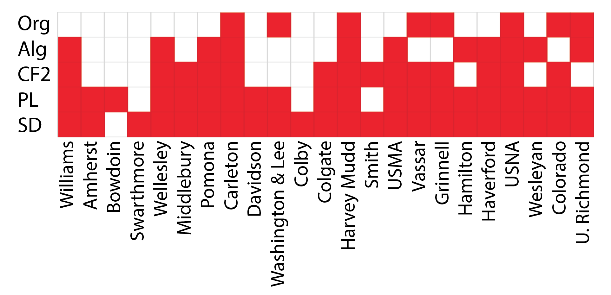

Computer science (CS) departments in liberal arts colleges occupy a unique position in their institutions, and face a unique set of challenges. An informal body of faculty from these institutions, known as The Liberal Arts Computer Science Consortium (LACS), was formed to discuss and coordinate strategies for tackling these challenges; the primary output has been a set of published curriculum recommendations for liberal arts CS programs in 1986, with updated versions published in 1996 and 2007.
We conducted a qualitative curricular analysis to better understand the state of CS programs at liberal arts colleges with respect to the model curriculum. In particular, we focus on how the recommendations are not followed in various departments. We find a broad trend towards fewer core required courses, with software development courses most often left optional. We also examine a small number of examples of required courses that are not included in the model, that appear to be motivated by pedagogy instead of resource limitations.
As a discipline that has developed relatively recently and is often perceived as an applied/practical field, CS is often seen as a curricular outlier among more traditional liberal arts disciplines. Meanwhile, majors at liberal arts colleges typically have limits on the number of courses that may be required, and CS departments at these institutions have historically been very small, posing staffing challenges for offering a comprehensive curriculum. The Liberal Arts Computer Science Consortium (LACS) is a group of computer scientists from liberal arts colleges that began meeting in 1984 to “model, advance, and sustain the study of computer science in liberal arts colleges throughout the nation” [1]. In addition to serving as a working group and venue to informally exchange ideas and share best practices, the Consortium has produced and updated a model curriculum for a computer science major in the context of a B.A. degree at a liberal arts college. Since the original model was published in 1986 [2], updated versions were released in 1996 [3] and 2007 [4]; each version followed after a broader curricular report from ACM/IEEE that was not specific to liberal arts colleges.
The goal of this project is to collect data about the course offerings and major structure in computer science departments at a range of liberal arts colleges and examine the extent to which they follow or differ from the model curriculum. This report summarizes preliminary results in this direction, focusing on required core courses for the major. This focus was chosen because the model has specific recommendations whose implementation can be directly compared across institutions; furthermore, the set of required courses is much more likely to be motivated by pedagogy and teaching philosophy than by staffing and/or other resource constraints.
The most recent (2007) LACS model curriculum is given in [4]. The an overview of the core required course structure is shown here:
In this diagram, solid lines denote prerequisite relationships and the dashed line between CS1 and FC1 indicates that CS1 may be a prerequisite or corequisite of FC1. Some terminology notes:
For each of the top 25 schools on the 2018 US News Best National Liberal Arts Colleges, we determined which of the model’s eight required core courses were required for completion of a Computer Science major. Two schools (Claremont McKenna and Bates College) in the top 25 do not offer a CS major, and were therefore omitted from consideration. Only in rare cases was there ambiguity as to whether a course matched a course from the model. In some departments, Computer Organization goes by another name, such as Systems, but covers fundamentally similar material. We omitted Mathematics requirements from detailed analysis; most programs require Discrete Math (CF1) and/or Calculus, as recommended in the model curriculum.
Although few departments require all eight core courses, most departments require a large subset, and only a few departments require additional computer courses outside this set. Figure 1 shows which courses are required in which department. CS1 and CS2 are omitted because all departments require them; CF1 (Discrete Mathematics) is omitted because it is generally required, but sometimes offered in a Math department and therefore part of the mathematics requirements.
Most departments offer all or almost all of the core courses from the model curriculum. Figure 1 shows that most departments require some subset of the core required courses. In a few cases, the non-required courses are included in optional requirements, such as “you must take either Software Development or Programming languages”. Also somewhat common is to require few specific courses, but require at least one course that is heavy in each of (for example) programming, theory, and systems.
The most commonly non-required course is Software Development. This is the most recent addition to the model, new in the 2007 version of the curriculum. However, 11 years later and during a period of rapid growth in many departments, only a few require this course. A likely explanation for this is a lack of interest and/or capability among CS faculty: very few CS PhDs have formal training or industry experience in software development practices. Furthermore, software development is a harder course to justify in a liberal arts setting, where practical training is explicitly avoided.
The data shows that Computer Organization (or Systems) and Algorithms are near-unanimously required, which makes sense as they are both long-standing core areas of the field. Theory of Computation and Programming Languages are in the middle, implemented by about 60% and 47%, respectively, of the 23 departments.
A handful of programs require a course that does not overlap with one of the core courses in the model curriculum. We examine several of these examples and discuss their merits in the current landscape of the field.
This course is a core required course that sits alongside the other core courses beyond the intro sequence, with CS2 as its prerequisite. The course offers introductory-level coverage of many topics pertinent to working with data, including 2D and 3D data visualization, basic linear algebra and matrix computations, and introductory machine learning topics like PCA, clustering, KNN, decision trees, and naive Bayes classification. These topics provide mathematical and computational prerequisites for studying computer graphics, computer vision, machine learning, scientific computation, and robotics, and the course serves as a prerequisite to upper-level electives on these topics in the curriculum.
This course seems to be predicated on the idea, absent from the model, that all computer scientists should be exposed to the basics of data manipulation, analysis, and visualization. As these techniques are more ubiquitously applied to fields outside CS (e.g, business and finance, digital humanities, journalism, and many more), this idea seems consistent with the broad-based educational mission of liberal arts colleges. This course provides CS majors with tools for applying their expertise outside their field and also gives non-majors a chance to learn these tools with a prerequisite chain of only two courses (CS1 → CS2 → Data Analysis and Vis). To fit the course in the curriculum, the major has no required Discrete Math course (CF1). The requisite material is likely spread across CS2, Data Analysis, and the electives where individual topics are needed.
By covering many common prerequisite topics and tools required for a number of applied elective fields, this course also solves a perennial problem for those who teach those electives. Without this course, these fundamentals must be covered in each elective, and the material ends up being review for some students who have already taken another such elective.
This course covers foundational computer science topics that appear in later core courses and/or electives at an introductory level. The three main areas covered are Functional Programming, Formal Methods, and Models of Computation. Functional Programming is recommended by the model to be covered somewhere in the intro sequence. Discrete Math courses often cover the very basics of Formal Methods and Models of Computation, and these topics are expanded upon in an elective on Formal Logic and/or Programming Languages and CF2, respectively. This course appears to provide a stronger baseline for students entering these upper-level courses, allowing those courses to dig in deeper to their respective topics.
This course spreads around some of the core content of a typical CS degree, with a focus on the more theoretical and formal aspects. The benefits to the follow-on core and elective courses are similar to those of Data Analysis and Visualization for upper-level applied electives, in that a stronger common baseline can be assumed.
These two courses are required for the computer science major at Vassar College. Their content is typical of courses that are generally offered as electives, but are required for the major in this program.
The program requirements are relatively heavy for a liberal arts college, at 13 courses, so the program has space to add additional requirements. The choice to include these two courses as requirements suggests a systems-oriented department, likely due to the research and teaching interests of the faculty.
This course covers a subset of material usually covered in Computer Organization and Computer Architecture (usually an elective). Requiring this course indicates an emphasis on deeper understanding of low-level operations of computers. As the day-to-day toolbox of a typical computer scientist and/or software practitioner moves towards higher-level tools (e.g., high-level lanaguages, frameworks, APIs), the relevance of this course seems to be waning. Though there is value in understanding the underlying hardware and systems, considering this emphasis a required of the major is increasingly atypical.
West Point (US Military Academy) is placed in the top 25 liberal arts colleges by US news, but its educational philosophy differs significantly from most other schools on the list. With a practically-oriented educational mission, it is unsurprising that it has a large number of required courses, including topics such as Databases and Networks, relevant to applied and systems-oriented subfields.
Two patterns emerge among courses required beyond the model’s recommendations. Data Analysis and Visualization and Fundamentals of Computer Science are both designed to provide a stronger common foundation for students heading into upper-level courses. Both have desirable side-effects both for non-majors, and for the follow-up courses where students arrive with a higher and more uniform baseline of expertise, allowing for less review and more depth on the course’s core topic. These courses have obvious benefits, which come at the nontrivial cost cost and complexity of staffing the additional course often enough to avoid a prerequisite bottleneck for students with constrained course schedules.
Compilers, Operating Systems, Microprocessors and Assembly, Databases, and Networks are all variations on including typically-optional content in the requirements for the major. This indicates a pedagogical focus of the department but does not innovate beyond the structure and contents of the model curriculum.
[1] http://cs.wellesley.edu/~lacs/index.html
[2] Gibbs, N. and Tucker, A., "A Model Curriculum for a Liberal Arts Degree in Computer Science," Communications ofthe ACM (29, 3) March, 1986, pp 202-210 http://dl.acm.org/citation.cfm?id=5667.
[3] Walker, H. and Schneider, M., "A Revised Model Curriculum for a Liberal Arts Degree in Computer Science," Communications of the ACM (39, 12) December, 1996, pp 85-95 http://dl.acm.org/citation.cfm?id=240502.
[4] LACS, "A 2007 Model Curriculum for a Liberal Arts Degree in Computer Science," ACM Journal of Educational Resources in Computing (7, 2) June 2007 http://dl.acm.org/citation.cfm?id=1240202.